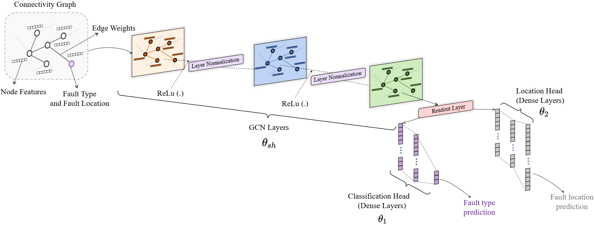

A heterogeneous multi-task learning graph neural network (MTL-GNN) is proposed which is capable of detecting, locating and classifying faults in addition to providing an estimate of the fault resistance and current. It is evaluated with IEEE-123 feeder system.

Chanda, Dibaloke, and Nasim Yahya Soltani. "Graph-Based Multi-Task Learning For Fault Detection In Smart Grid." In 2023 IEEE 33rd International Workshop on Machine Learning for Signal Processing (MLSP), pp. 1-6. IEEE, 2023.
Project Page
Poster
Abstract: Timely detection of electrical faults is of paramount importance for efficient operation of the smart grid. To better equip the power grid operators to prevent grid-wide cascading failures, the detection of fault occurrence and its type must be accompanied by accurately locating the fault. In this work, we propose a multi-task learning architecture that encodes the graph structure of the distribution network through a shared graph neural network (GNN) to both classify and detect faults and their locations simultaneously. Deploying GNNs allows for representation learning of the grid structure which can later be used to optimize grid operation. The proposed model has been tested on the IEEE-123 distribution system. Numerical tests verify that the proposed algorithm outperforms existing approaches.
Use the following information to cite the paper.
Chanda, Dibaloke, and Nasim Yahya Soltani. "A Heterogeneous Graph-Based Multi-Task Learning for Fault Event Diagnosis in Smart Grid." IEEE Transactions on Power Systems (2024).
@article{chanda2024heterogeneous,
title={A Heterogeneous Graph-Based Multi-Task Learning for Fault Event Diagnosis in Smart Grid},
author={Chanda, Dibaloke and Soltani, Nasim Yahya},
journal={IEEE Transactions on Power Systems},
year={2024},
publisher={IEEE}
}